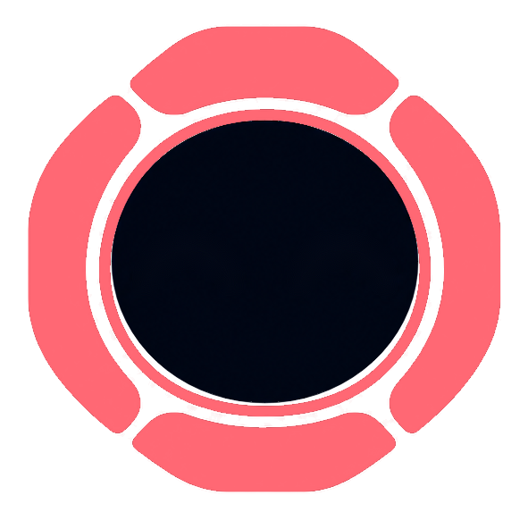
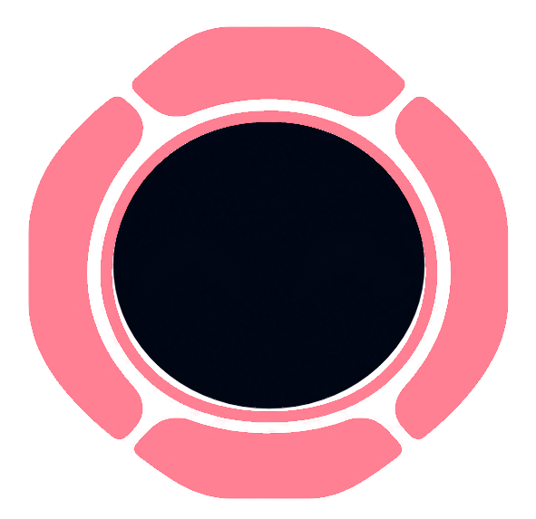

×
Drop files hereThen ask C.O.D.Y. about them
What can I help with?
Background tasks
Connecting…General
BEHAVIOUR
CONVERSATIONS
Conversation historyBrowse previous chats and continue a conversation.
ABOUT
C.O.D.Y. Dynamic IslandDynamic Island 1.8.0 · Integrated Windows assistantUp to date locally
Your preferences are saved automatically.
Voice
HANDS-FREE
Hands-free listening is off.
Wake detection runs locally on this PC. After a wake phrase, your request uses C.O.D.Y.’s normal voice recognition. Say “Hey Cody” or “Okay Cody” with your request, or wait for the listening chime. Cody waits through thinking pauses and sends your request when you finish. Say “cancel”, “never mind”, or “stop listening” to discard it. Pauses during replies, push-to-talk and dictation.
SPEECH SPEED
Applies to C.O.D.Y. speech output.
VOICE
Preview selected voiceListen to a short sample of C.O.D.Y.'s voice.
REPLIES
Microphone
ACCESS
Microphone accessCheck that C.O.D.Y. can use your microphone.
RECOGNITION
INPUT DEVICE
Refresh devicesAsk Windows to list connected microphones.
TEST MICROPHONE
Input levelsMicrophone not tested
Appearance
C.O.D.Y. COLOUR
Choose a look for your animated companion.
ACCENT COLOUR
Interface accentUsed for selected controls and highlights.
ISLAND
Shortcuts
ALTGR QUICK MESSAGE
TALK TO C.O.D.Y.
Push to talkHold Ctrl + Alt to speak. Release to stop listening.
CtrlAlt
Open chatOpen chat and focus the message box.
CtrlAltC
Mute or unmute C.O.D.Y.Toggle C.O.D.Y. voice input, wake phrases and dictation. Other apps keep their microphone access.
CtrlAltM
DICTATION
Hold to dictateClick a text field, hold Ctrl + Win and speak. Release to insert your words.
CtrlWin
Hands-free dictationDouble-tap Ctrl + Win to keep recording without holding the keys.
CtrlWin×2
Finish hands-free dictationPress Ctrl + Win again to finish and insert the text.
CtrlWin
Cancel dictationDiscard the current recording.
Esc
These shortcuts are fixed. Dictation types into the text field you selected.
Cursor
COMPUTER CONTROL
VISIBILITY AND INTERACTION
Behaviour
BEHAVIOUR
SENSITIVITY
REACTIONS
Plugins
Open Plugins to load the CODY catalog.
Add an MCP plugin
Agents
AI
GPT modelGPT 6.1 Sol · Medium reasoning
Claude Code Usage
Claude Code UsageAgent and conversation allowance
Claude Code accountChecking connection…
Agent messages
Conversations
Open Agents to load your Claude Code usage.
Codex Usage
Codex UsageChatGPT account allowance
Open Agents to load your Codex usage.
WORKSPACE
Agent folderLoading…
Reset to default folder
Agents create their projects here. The default is in local app data, so OneDrive doesn't sync their scratch files.
AUTONOMY
ANNOUNCEMENTS
Cody stays quiet during calls, screen sharing, and Do Not Disturb. Finished work waits in chat and the island shows jobs with updates.
WHAT AGENTS CAN REACH
Windows privacy settings inherited by agents. Select a row to review access in Windows Settings.
Loading agent settings…
Updates
C.O.D.Y.
C.O.D.Y.Updates from GitHub Releases
Loading update status…
Choose when to download and restart. Your conversations and settings are kept.
Permissions
COMPUTER CONTROL
Emergency stopTake back control and disable further computer actions.
Cody controls the mouse and keyboard while computer use is active. Physical mouse and keyboard input is paused during computer use. Press Esc to stop and take back control.
Loading backend permissions…
CUSTOM PERMISSIONS
Enable the access you want C.O.D.Y. to use. Disabled permissions are blocked.
CODY BACKEND
C.O.D.Y. QUICK COMMANDS
These switches control built-in C.O.D.Y. commands. CODY background jobs use their own tools and the backend permissions above.
BACKGROUND TASK WORKSPACE
Project folderDefault background task workspace
This is the workspace for background projects, not a limit on file access.
Computer access requested
Allow this step only. You can take control back with Esc.